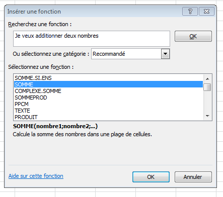
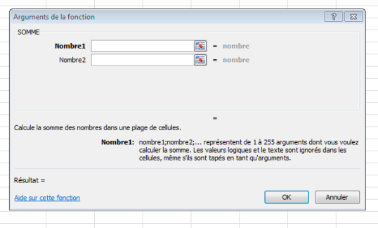

Fonction Somme
Rappel :
Relisez la partie intitulée Références de cellules afin de savoir comment noter les références de cellules comme arguments.
Syntaxe
=SOMME(nombre1 ; [nombre2] ; ...)
Les arguments entre crochets sont des arguments facultatifs. Dans ce cas, un seul argument peut être utilisé pour utiliser la fonction SOMME.
Exemple :
Par exemple, =SOMME(A1:A5) additionne tous les nombres contenus dans les cellules A1 à A5.
De même, =SOMME(A1; A3; A5) additionne les nombres contenus dans les cellules A1, A3 et A5, sans prendre en compte A2 et A4.
Voyons comment utiliser l'assistant fonctions pour la fonction Somme :
Méthode :
Je sélectionne la cellule dans laquelle je veux qu'apparaisse le résultat
Je clique sur le bouton Fx de la barre de formules

3. Je sélectionne Ok.
4. Je dois ensuite fournir les arguments à la fonction

En face de nombre 1, je peux taper les références de données que je souhaite employer. Dans l'exemple : A1:A5
Nous pouvons remarquer que en face de Nombre1, l'assistant affiche les arguments, les valeurs contenues dans les cellules A1 à A5 entre accolades. Il affiche même déjà le résultat =15. Vous pouvez ainsi vérifier avant de valider que votre formule fonctionne et qu'elle ne contient pas d'erreur car 1 + 2 + 3 + 4 +5 = 15
Complément :
Il est également possible de sélectionner la plage de donnée des arguments en sélectionnant les cellules directement dans la feuille de calcul.
Pour cela, il faut sélectionner le symbole avec une feuille et une flèche rouge qui se situe à droite de la zone de texte de l'argument souhaité, puis de sélectionner une cellule unique ou une plage de données.